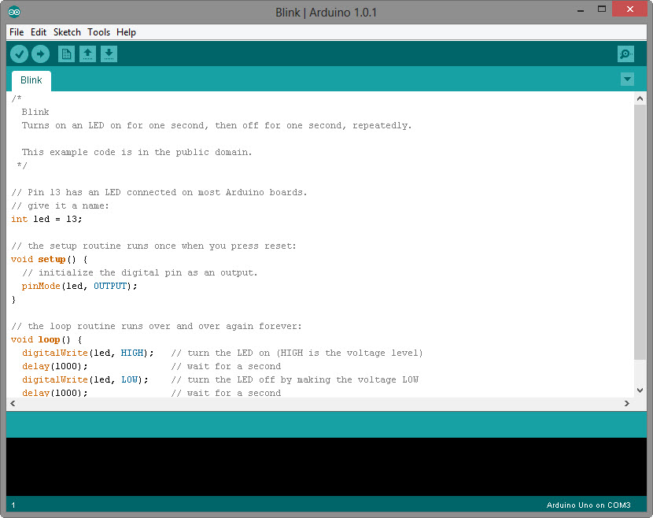
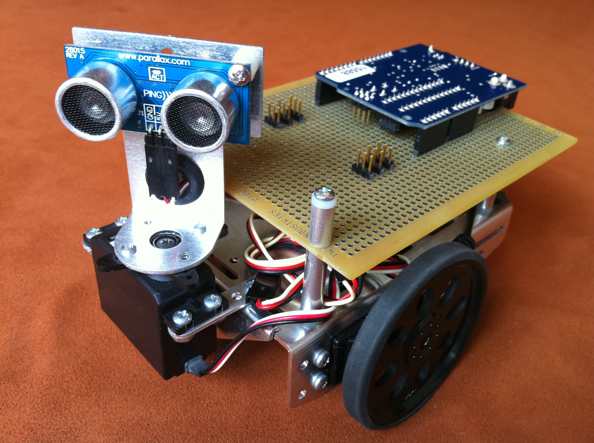
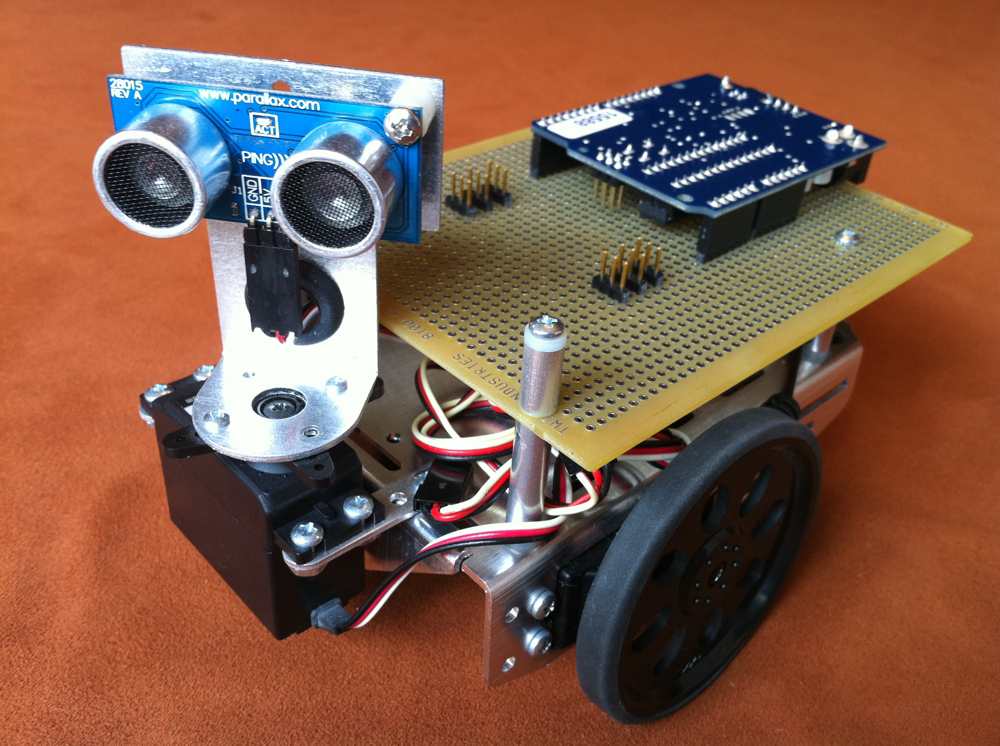
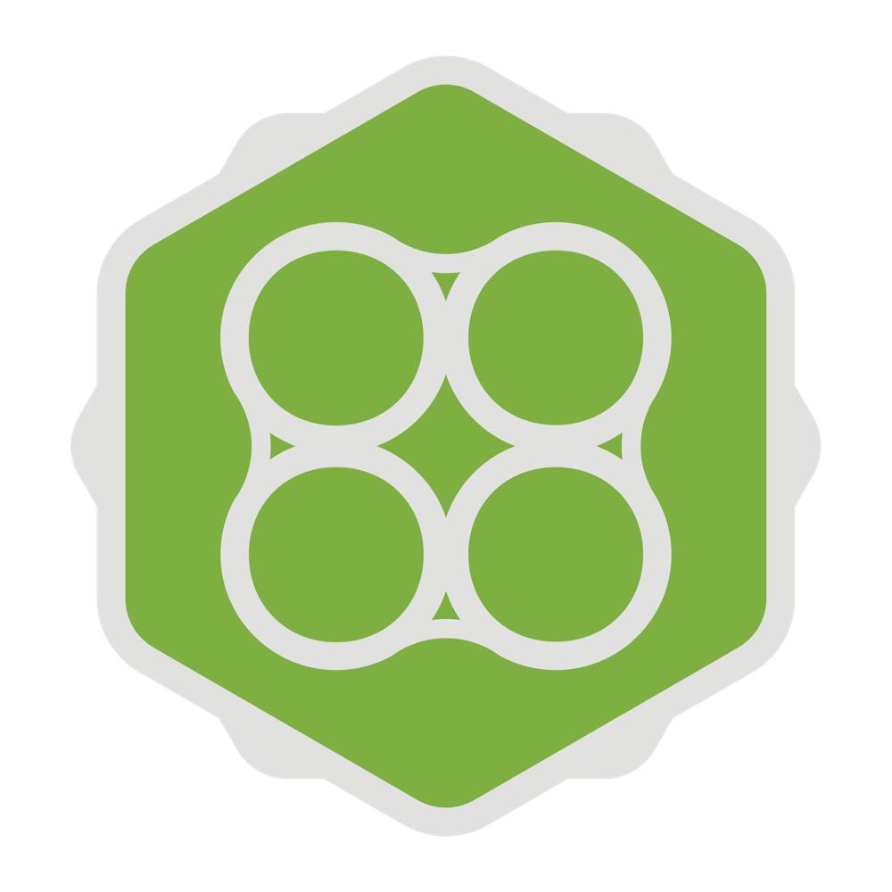
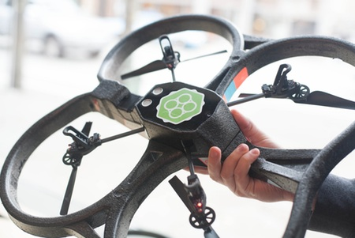

WAT?
NodeBots!
What's a NodeBot?
node.js
+ serial port
+ firmata
+ johnny-five
Arduino

Arduino IDE

Firmata
 

NodeCopters

Are flight capable NodeBots


JavaScript, SRSLY?!
I though that was just a toy language.
Isn't it just for web pages?
JavaScript

JavaScript
Lightweight
Easy to pick up
Fast feedback
Incredible community
Puts the fun in functional
Node.js
Modern JavaScript runtime
Chrome V8 under the hood
Event driven, non-blocking IO
C++ modules
Hardware is hard
Hard to debug
Unreliable
Might just cut your arm off
The normal rules do not apply
(a multimeter is more useful than a unit test)
Reality has a terrible API
- Motors move too much
- Servos don't move enough
- Sometimes you have to add $FUDGE_FACTOR*
* = $FUDGE_FACTOR === 5, fact.
Great!
So I can move a servo and turn some LEDs on.
Now what?
Build Cat
Ptolemy, to his friends
Build Cat does the conference circuit

Full Frontal, 2013
What else?
All this talking makes me thirsty
B.A.R.B.A.R.A.
Build A Robot, Brew A Real Ale
A micro-services approach to brewing beer
The idea
Hardware
Rasperry-Pi
BeagleBone Black
2x Arduinos
Temperature Sensor
Aquarium Heater
Micro services
Single-responsibility processes
- Temperature sensor
- Heater
- Database
- Twitter
- Service registry
Service location
Fault tolerance
pm2 - https://github.com/Unitech/pm2
Twitter

The finished article


27th July 2013